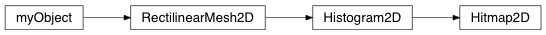

Hitmap2D¶
@RectilinearMesh2D_Class Module describing a 2D Rectilinear Mesh class with x and y axes specified
-
class
geobipy.src.classes.statistics.Hitmap2D.Hitmap2D(xBins=None, xBinCentres=None, yBins=None, yBinCentres=None, values=None)¶ Class defining a 2D hitmap whose cells are rectangular with linear sides
-
fromHdf(grp, index=None)¶ Reads in the object froma HDF file
-
getOpacityLevel(percent)¶ Get the index along axis 1 from the bottom up that corresponds to the percent opacity
-
hdfName()¶ Reprodicibility procedure
-
varianceCutoff(percent=67.0)¶ Get the cutoff value along y axis from the bottom up where the variance is percent*max(variance)
-